7. Más Allá de la Linealidad
Resumen
En este capítulo relajamos el supuesto de linealidad que ha sido central en los capítulos anteriores. Presentamos métodos que extienden el modelo lineal para capturar relaciones no lineales: regresión polinomial, funciones escalón, splines, splines de suavizado, regresión local y modelos aditivos generalizados (GAMs).
Regresión Polinomial
La regresión polinomial reemplaza el predictor \(X\) por sus potencias:
\[y_i = \beta_0 + \beta_1 x_i + \beta_2 x_i^2 + \cdots + \beta_d x_i^d + \epsilon_i\]
La Figura 1 muestra ajustes polinomiales de diferentes grados para la relación entre mpg y horsepower en los datos Auto.
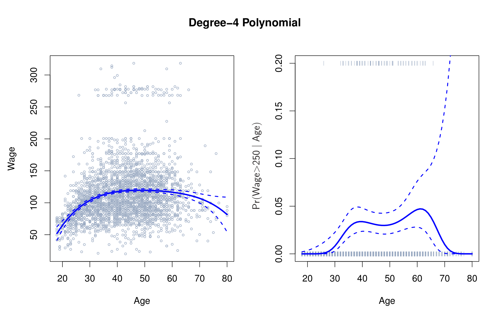
Funciones Escalón
Las funciones escalón (step functions) dividen el rango de \(X\) en intervalos y ajustan una constante en cada uno. Esto es equivalente a crear variables dummy para cada intervalo:
\[C_0(x) = I(x < c_1), \quad C_1(x) = I(c_1 \le x < c_2), \quad \ldots, \quad C_{K-1}(x) = I(c_{K-1} \le x)\]
La Figura 2 ilustra el ajuste de funciones escalón a los datos Wage, donde se aplicaron cortes en la variable año.
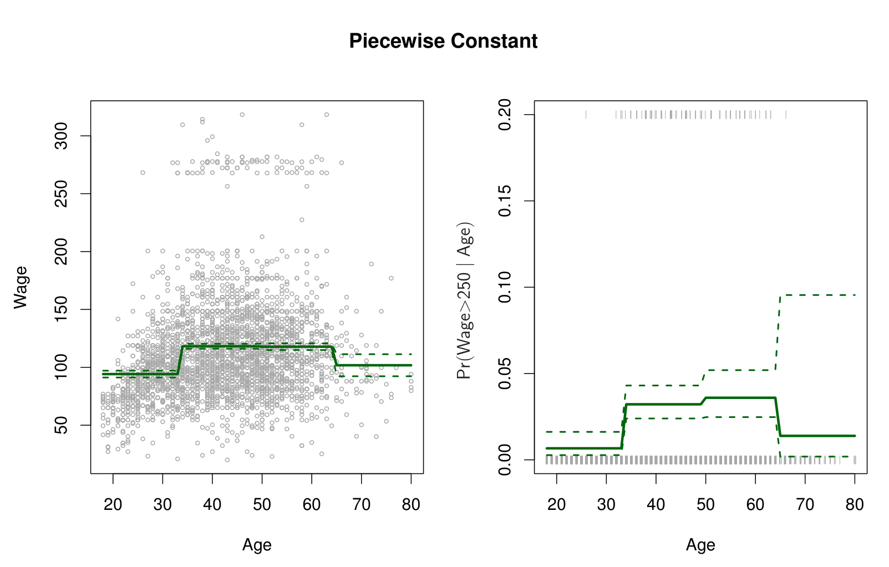
Funciones Base
Tanto la regresión polinomial como las funciones escalón son casos particulares de funciones base (basis functions). En general, transformamos \(X\) usando \(K\) funciones \(b_1(X), b_2(X), \ldots, b_K(X)\):
\[y_i = \beta_0 + \beta_1 b_1(x_i) + \beta_2 b_2(x_i) + \cdots + \beta_K b_K(x_i) + \epsilon_i\]
Elegir funciones base adecuadas es clave para capturar la no linealidad de forma eficiente.
Splines de Regresión
Polinomios por Partes
Los polinomios por partes (piecewise polynomials) ajustan polinomios independientes en diferentes intervalos de \(X\). Sin embargo, pueden producir discontinuidades en los puntos de unión.
Restricciones y Splines
Un spline es un polinomio por partes con restricciones de continuidad y suavidad en los nodos (knots). Un spline cúbico impone continuidad de la función, la primera y segunda derivada en cada nodo. La Figura 3 muestra un spline cúbico con nodos en las edades de 50 y 60 años para los datos Wage.
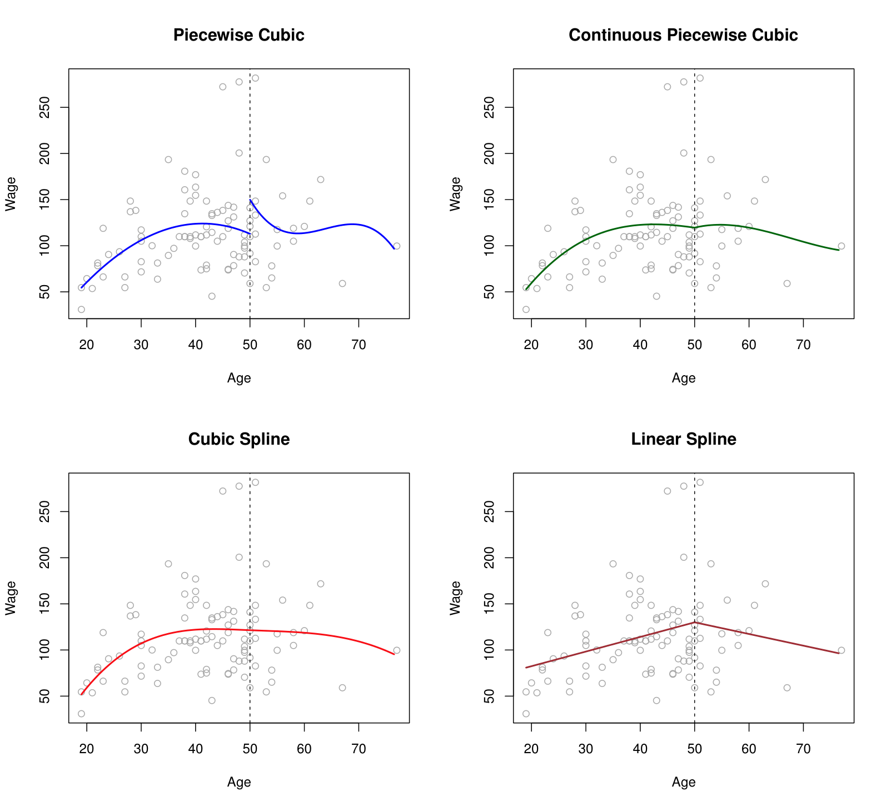
Representación con Base de Splines
Los splines se representan convenientemente usando base B-spline o base de splines naturales. La Figura 4 muestra diferentes bases de splines para los datos Wage.
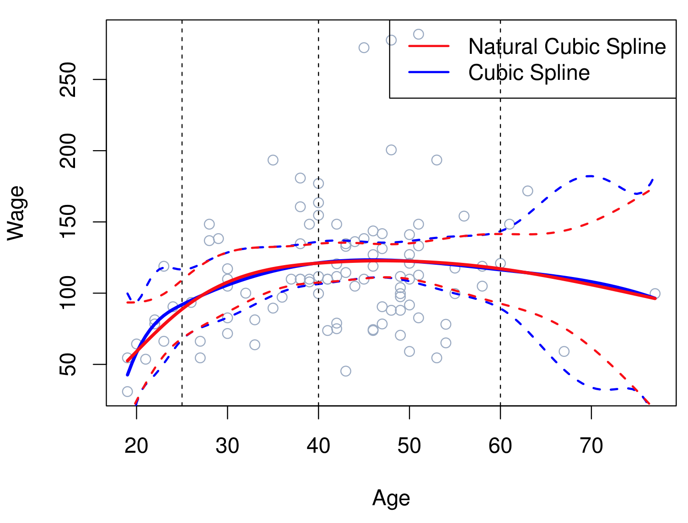
Elección del Número y Ubicación de los Nodos
La ubicación de los nodos puede basarse en cuantiles de \(X\). La Figura 5 compara splines con diferente número de grados de libertad (nodos).
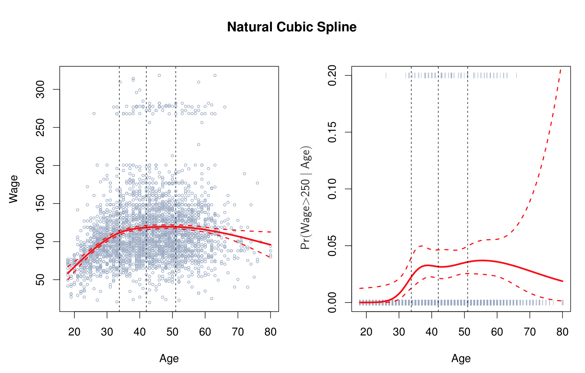
Comparación con Regresión Polinomial
La Figura 6 compara splines cúbicos con regresión polinomial en los datos Wage, mostrando que los splines son más flexibles en regiones con variación y más estables en los extremos.
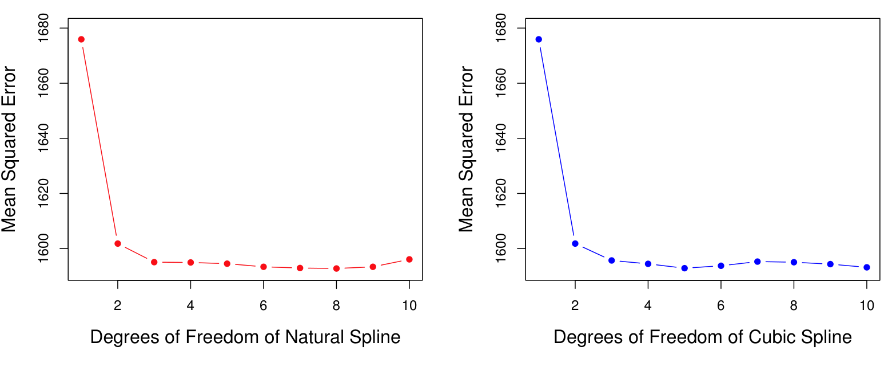
Splines de Suavizado
Los splines de suavizado (smoothing splines) surgen de minimizar una RSS penalizada:
\[\sum_{i=1}^{n} (y_i - g(x_i))^2 + \lambda \int g''(t)^2 dt\]
El parámetro \(\lambda\) controla el balance entre ajuste y suavidad. La Figura 7 ilustra splines de suavizado con diferentes valores de \(\lambda\) para los datos Auto.
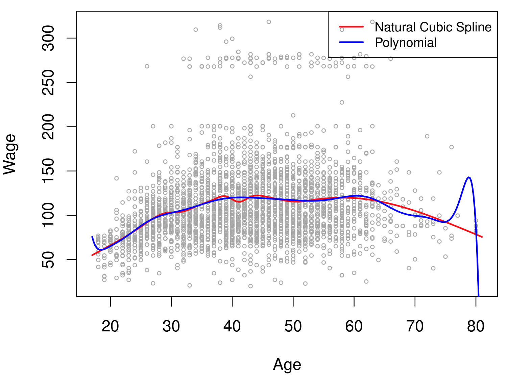
La Figura 8 compara splines de suavizado con splines de regresión, mostrando cómo ambos se relacionan.
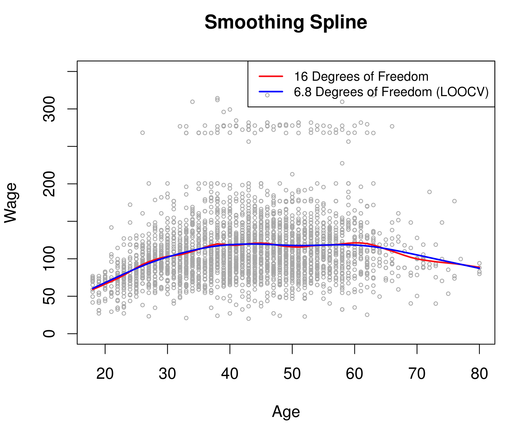
Selección del Parámetro de Suavizado
El parámetro \(\lambda\) se selecciona mediante validación cruzada. La Figura 9 muestra el error de validación cruzada en función de los grados de libertad efectivos.
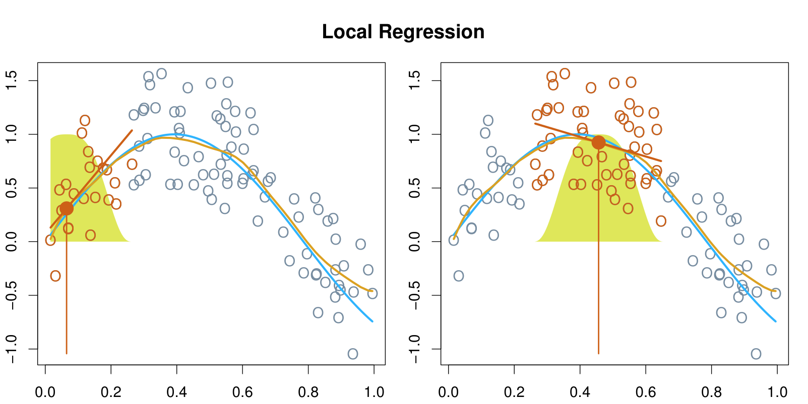
Regresión Local
La regresión local ajusta un modelo separado en cada punto de evaluación \(x_0\), usando solo las observaciones cercanas ponderadas por una función kernel. La Figura 10 ilustra la regresión local con diferentes anchos de ventana en los datos Auto.
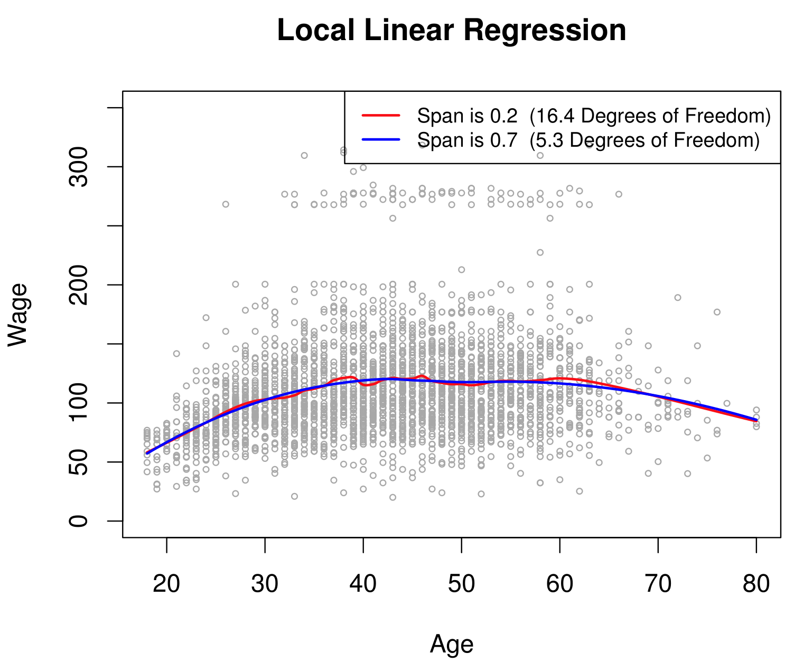
La Figura 11 muestra la regresión local en datos simulados, comparando diferentes kernels y anchos de ventana.
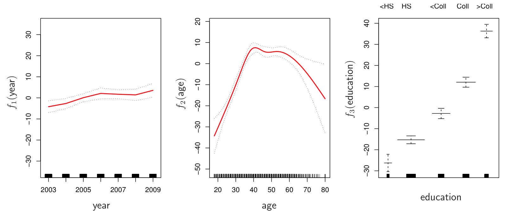
Modelos Aditivos Generalizados (GAMs)
Los modelos aditivos generalizados (Generalized Additive Models, GAMs) extienden los modelos lineales permitiendo que cada predictor tenga una función no lineal:
\[y_i = \beta_0 + f_1(x_{i1}) + f_2(x_{i2}) + \cdots + f_p(x_{ip}) + \epsilon_i\]
Cada \(f_j\) puede ser un spline, una regresión polinomial, o cualquier otra función suave. La aditividad del modelo mantiene la interpretabilidad.
GAMs para Regresión
La Figura 12 muestra un GAM ajustado a los datos Wage con splines de suavizado para año y edad, y términos lineales para otras variables.
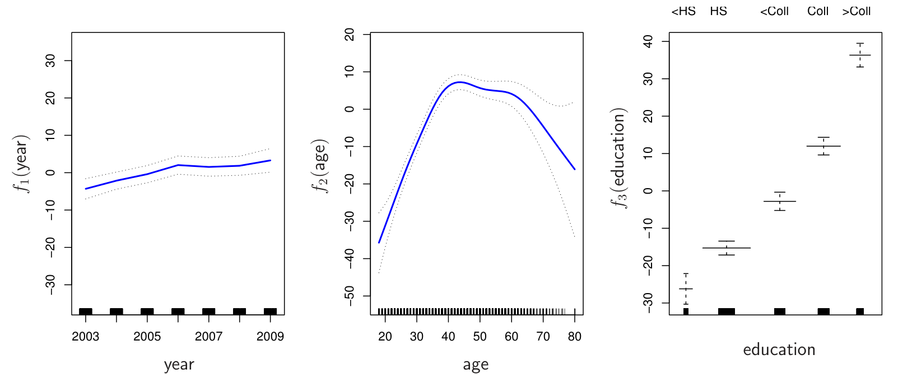
La Figura 13 extiende el GAM con términos de interacción y términos cualitativos para los datos Wage.
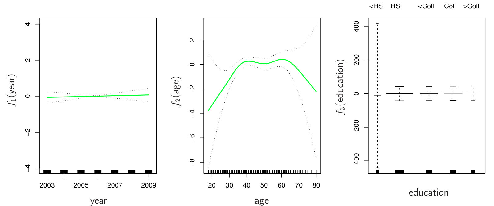
GAMs para Clasificación
Los GAMs también pueden utilizarse para clasificación. La Figura 14 muestra un GAM para clasificación binaria aplicado a datos simulados, donde se modela el logit de la probabilidad.
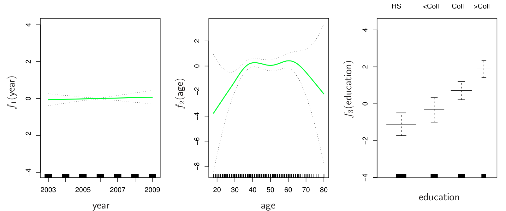
Laboratorio
Los laboratorios con el código completo de este capítulo están disponibles en el sitio oficial del libro: statlearning.com. También puedes acceder a los notebooks en el repositorio oficial de ISLP: ISLP_labs en GitHub.